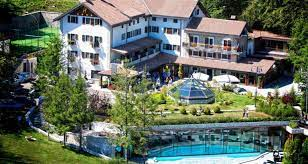

...qualità garantita dal 2007
Situato nella valle del Gran Sasso,l'hotel offre una vista mozzafiato sulla valle circostante. Si trova in una località tranquilla e appartata, lontana dal trambusto della città, ma comunque facilmente raggiungibile in auto o tramite navetta.

Servizi e attività: Gli ospiti possono rilassarsi presso la spa di classe mondiale, fare una nuotata in una piscina all'aperto a sfioro che sembra fondersi con l'orizzonte o godersi il sole a bordo piscina. L'hotel dispone anche di un campo da golf, un centro fitness completamente attrezzato e offre servizi di escursioni sul Gran Sasso.

Personale:
Il personale dell'hotel è cortese e altamente professionale, pronto a soddisfare ogni desiderio degli ospiti e assicurarsi che il loro soggiorno sia indimenticabile.
Tariffe:
Le tariffe variano a seconda del tipo di camera, della stagione e dei pacchetti inclusi, ma riflettono il lusso e i servizi eccezionali offerti da Hotel Ventimiglia.